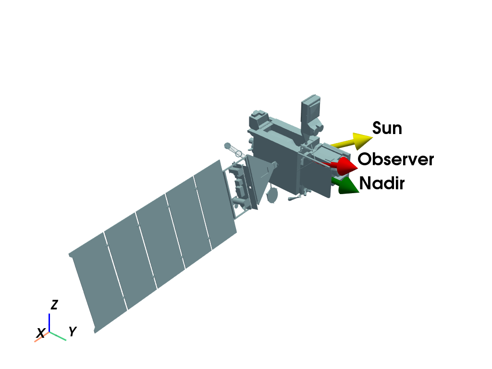
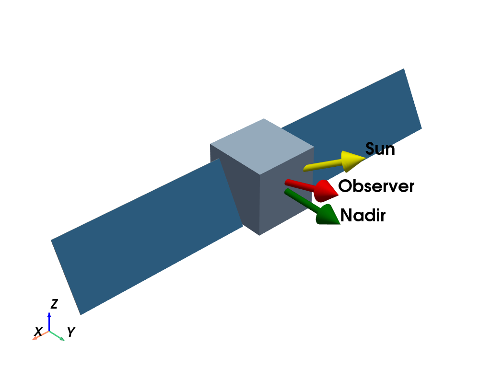

Note
Go to the end to download the full example code.
Rendered Models#
Images of the high-fidelity models used for this paper


import numpy as np
import pyvista as pv
import mirage as mr
import mirage.vis as mrv
s = mr.hat(np.array([-0.5, 0.7, 0.3]))
p = pv.Plotter()
obj = mr.SpaceObject('goes17.obj')
obj.rotate_by_quat(mr.rv_to_quat(-np.pi / 2 * np.array([1.0, 0.0, 0.0])))
mrv.render_spaceobject(p, obj, origin=(0, 0, 0))
p.add_axes(shaft_length=2.0, label_size=(0.5, 0.2), line_width=3)
p.camera.zoom(1.3)
mrv.plot_arrow(p, [0, 0, 0], [0, 1, 0], label='Nadir', color='green', scale=1.5)
mrv.plot_arrow(p, [0, 0, 0], s, label='Sun', color='yellow', scale=1.5)
mrv.plot_arrow(p, [0, 0, 0], [0, 1.0, 0.3], label='Observer', scale=1.5, color='Red')
p.camera.focal_point = (1.0, 0.0, 0.0)
p.show()
p = pv.Plotter()
obj = mr.SpaceObject('box_wing.obj')
obj.shift_to_center_of_mass()
obj.v[np.abs(obj.v[:, 0]) > 1.0, 0] *= 2
obj = mr.SpaceObject(vertices_and_faces=(obj.v, obj.f))
nb = np.array([0.0, 1.0, 0.0])
ang = mr.angle_between_vecs(s, nb)
rotm = mr.r1(-ang + 0.2)
faces_to_rotate = mr.vecnorm(obj.face_centroids) > 0.58
verts_to_rotate = np.unique(obj.f[faces_to_rotate.flatten()])
obj.v[verts_to_rotate, :] = mr.stack_mat_mult_vec(rotm, obj.v[verts_to_rotate, :])
obj = mr.SpaceObject(vertices_and_faces=(obj.v, obj.f))
mrv.render_spaceobject(
p, obj, scalars=obj.face_areas, cmap='blues', show_scalar_bar=False
)
mrv.plot_arrow(p, [0, 0, 0], [0, 1, 0], label='Nadir', color='green', scale=1.5)
mrv.plot_arrow(p, [0, 0, 0], s, label='Sun', color='yellow', scale=1.5)
mrv.plot_arrow(p, [0, 0, 0], [0, 1.0, 0.3], label='Observer', scale=1.5, color='Red')
p.camera.zoom(1.4)
p.add_axes(shaft_length=1.0, label_size=(0.5, 0.2), line_width=3)
p.camera.focal_point = (0.3, 0.0, 0.0)
p.show()
Total running time of the script: (0 minutes 2.596 seconds)